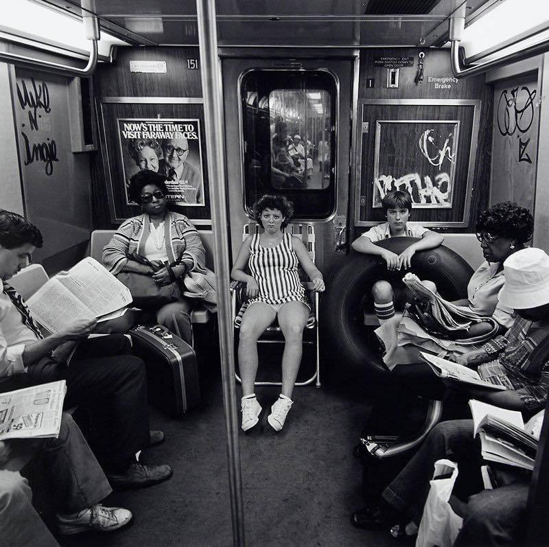

Times Square, 1985

Unicycle basketball in 1960s Harlem. I guess it never really caught on for some reason.
Times Square, 1985
Alphabet City, 1983
Unicycle basketball in 1960s Harlem. I guess it never really caught on for some reason.

Sunning under the WTC
Yankee Stadium demolition, 1974
Traffic on Park Ave, 1970s

Bleecker and Lafayette, 1979

Midtown in the 70s
The West 4th Street/Washington Square station of the NYC subway system
Photo taken August 1978, from the collection of the New York Transit Museum
South Bronx, 1980 (from “Wolfen”)
John, Yoko, Sean, and a shit-ton of garbage in Riverside Park, 1976.

1973, the graffiti era begins.
Still my most popular post of all-time, with over 100K notes!
Riding a horse the wrong direction down a one-way street. 1976, off Columbus Ave.
87th and Broadway, 1985. I bought my first skateboard at Herman’s there (no relation to the big Herman’s Sporting Goods stores).

She brought her own seating. 1978.
Midtown, 1980

NYC garbage truck, 1979

1975 garbage strike

Duran Duran in Central Park